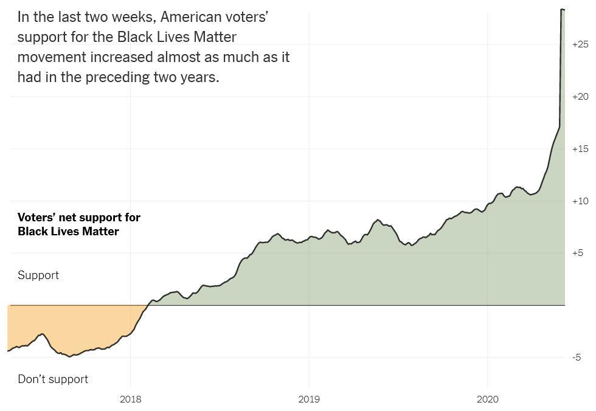

【美國】【政治】談美國的反種族歧視運動
2020-06-11 04:20:00
原文网址：https://blog.udn.com/MengyuanWang/138397162
美國自開國以來，除了小羅斯福總統之後的兩代人時間之外，政府屈從於富豪權貴階級是常態，制度也是圍繞著這些人的利益而設計的。警察是確保社會秩序和財產安全的第一綫，也是維持階級穩定的主要工具，所以自然也纍積出許多美國獨有的特色和慣例：
一）首先，他們的組織互不統屬、叠床架屋，由各級地方政府自行資助和管理。村有村警，校有校警，完全不受任何專業上級的管制；自己的地盤雖然有限，但只要在範圍之内，就有近乎無限的自由裁量權。我剛到美國時，還覺得奇怪，爲什麽這麽低效的體制能存活到現代；後來住久了，才明白這是爲了方便各地大大小小的特權人物享受獨立自由的特殊待遇。例如鄉下的小鎮，或許就一兩百口人，那麽自家的警長自然會對當地頭號地主畢恭畢敬、另眼相看；如果換成從州治定期輪調而來的派出所人員，本地土豪的地位和權威就要受影響。
二）其次，美國警察在法律上享有很極端的奇特待遇：他們沒有任何責任，卻有著幾乎絕對的權力。他們的誓言雖說“Protect and Serve”，但這純屬自欺欺人的空談；實際上美國各級法庭，含最高法院在内，一再判決確立所謂的“No Duty To Protect”原則，也就是警察可以坐看犯罪進程，而沒有責任做出任何反應，即使他的任務正是要執行法庭發出的保護令（Court-issued protective order；參見https://www.nytimes.com/2005/06/28/politics/justices-rule-police-do-not-have-a-constitutional-duty-to-protect.html ）。
2018年二月，Florida州的Stoneman Douglas高中發生學生槍擊案，前後持續6分鐘，總共死了17個人。在校執勤的警長助理（Sheriff’s Deputy）Scot Peterson聽到槍聲之後，留在室外躲過了整個事件；事後警長只能將他暫時停職。到了2019年，輿論壓力逼著州政府追究他的法律責任，但是檢察官找不到法條依據，最後只能很牽强地用“Child Neglect”“兒童照管不良”罪名來起訴，至今沒有什麽進展。
與零責任搭配的，卻是極高的權力，其中最嚴重的當然是他們可以自行決定奪取公民的生命。原本唯一對美國警察殺人做統計的，是FBI的年度報告，通常說是300+人次，但是在2014年Ferguson動亂之後，這被揭露是故意造假。後來《Washington Post》從2015年開始，私下編纂地方媒體上報導過的事件，發現實際的警察殺人數目在每年1000人次左右，亦即官方數字的三倍。這樣頻繁的當場槍決，絕大多數並不是警匪槍戰的後果（每年殉職的警察大約160人，但其中多半是意外，只有50人次上下死於匪徒之手，2013年的數字是近年最低，只有27人次；參見https://time.com/3854685/police-deaths-2014-law-enforcement-fbi/），而是絕對的權力造成絕對的腐化：法律和制度保證隨意開槍也不會有後果，那麽自然形成Trigger-happy的文化和習慣。
許多沒有在美國長住的人，依照常理推斷，以爲警察隨意開槍事後卻無法追責，是因爲他們互相維護，編造藉口或栽贓，以致法律系統沒有足夠的證據來定罪。其實這只是美國警察許多護身符的其中一張；因爲它無關體制缺陷，所以最方便電影和電視編劇用來創造劇情張力，也順便給觀衆留下錯誤的印象。實際上在最近十幾年，因爲智能手機的普及，警察施暴被旁觀者錄下視頻越來越普遍，但這些證據只幫助被害者家屬獲得金錢賠償，警察仍舊不必面對刑責；例如2014年第一個死於“I can’t breathe”的黑人Eric Garner，勒死他的警察即使在視頻公佈引發暴亂，而且驗尸官報告定位為Homicide（故意殺人）之後，還是被大陪審團拒絕起訴而無罪開釋。這裏的原因是雙重的：不但有百多年的無數判例，確立了警察的自由決斷權，而且辯護方很容易找到同情警察的陪審員（美國的陪審團，原本就要求是“A jury of peers”，亦即由被告的同儕組成，再加上白人人口一般佔多數，辯護律師又有權對陪審員做若干選擇，所以種族事件中的白人被告基本不可能面對黑人陪審團）。
最近幾年，警察施暴的證據越來越明確，但是法庭還是反復給出無罪判決，反而更加確立了警察的免責權。警察還沒有下令，你就伸手去拿證件，槍斃。警察叫你趴下，你卻只坐在地上哭，槍斃。警察叫你下車，你沒有反應，槍斃。警察查毒走錯門，你沒有未卜先知的能力，在客廳走動，槍斃。以上都是知名的實際案例，手無寸鐵的受害者黑人白人都有；基本上只要警察是在執勤，你又不是他所知的特權階級（名車、華服和豪宅也是簡易的身份鑒別方式），那麽你的性命就只在他一念之間。他心情不好，濫殺無辜的後果，一般就只是暫時停職（Suspension），開除已經是罕見的極端處置了。
三）前面提到美國的體制是圍繞著富豪權貴階級而設計的，這也包括了自由開除雇員的權利。整個行業聯手封鎖吹哨者或批評者一輩子的就業機會，不但完全合法，而且是維繫體制秩序的常見手段（參見前文《美國言論自由的假相》）。那麽警察因施暴被開除，應該也有些嚇阻力才對，然而實際上他們有恃無恐，這個靠山就是警察工會。
美國的工會勢力在Reagan之後，受到連串的政策打擊而迅速萎縮，在社會整體上早已無足輕重，唯一的例外是警察工會。這乍看之下，似乎很不合理：出生入死、執掌公民生死大權的武裝力量，如同軍隊一樣，紀律應該是必要的元素，怎麽會有工會呢？就算有，爲什麽會受到決策階層的特別支持保護呢？但是如果理解了美國的警察是維持階級特權的工具，而殺人免責是他們高執行效率的重要因素，那麽警察工會做爲肇事警員職位和財務的最終保障，就也有了重要的價值。
警察施暴被錄影公開之後，袒護他的一般不是要對政客和選民負責的警長，而是工會。有官司，工會爲他請律師；有停職處分，工會爲他申訴，並且補貼生活費；如果真被開除，工會爲他在別個鎮上安排新工作。美國有種族歧視問題的市政府們，包括這次出事的Minneapolis在内，早就嘗試過派任黑人為總長和高級警官，但是毫無效果，就正是因爲警察局紀律鬆弛，警員的忠誠在於工會而不是組織本身，更不是長官。最妙的是，共和黨不會動警察，而民主黨不會傷害工會，所以這個以工會為支撐的警察體系，基本不受選舉結果影響，經歷幾十年的改革壓力反而越加壯大。本周Minneapolis市議會沸沸揚揚地要立法解散警察局，在内行人眼中明顯是故意Barking up the wrong tree的純作秀：解散工會副作用小而效果大，解散警察局剛好相反；幾個月後有了犯罪率急劇上升的統計結果來杜絕悠悠之口，反而方便重回生意的老套（Business as usual）。
以上我解釋了美國警察野蠻凶殘的起因、背景和改革上的難處。他們向來對底層民衆愛打就打、愛殺就殺，每年死者成千、傷者上萬，幾十年來引發的示威、暴亂不計其數，現代的手機和網絡科技，更使得警察施暴被公諸於世的頻率持續增高，那麽爲什麽到2020年才忽然爆發全國性的抗議活動？爲什麽三年前直接開除Kaepernick的NFL忽然覺得必須出面道歉？爲什麽爭議了幾十年的南軍將領雕像，本周像被噴了殺蟲劑的蒼蠅一樣紛紛落地？爲什麽美軍等到現在才禁掉邦聯旗幟？
一般人馬上想到新冠疫情，但這其實禁不起仔細的推敲。Trump的支持者和反對者始終極爲狂熱，新冠並沒有改變既有情勢，Trump的民調到兩周前仍然紋風不動。此外，如果Floyd被殺之後，沒有出現大規模的示威活動，必然也會有人將其歸因於群衆害怕傳染；既然新冠這個因素連推動事件發展的方向都不能確定，那麽自然無法推導出因果關係，只能做相關性的聯想，而這在邏輯上是無意義的。最後，新冠如何影響NFL和美軍的決策過程，是很難自圓其説的。
我認爲這裏另有機制。美國政經精英要制定新的政策方向或做重要的變革，傳統上必須先以輿論洗腦、製造出共識。70年代財閥反撲是如此，2009年準備反中也是如此，其實現在風起雲湧的反種族歧視運動，也同樣是一個宣傳活動推動多年的後果；只不過這種事不能明説，所以過去幾年的美國大衆又是溫水煮青蛙，完全沒有意識到他們早已在被組織動員的過程當中。
當然，新冠和Floyd被當衆勒死這樣的突發事件不可能被事先預見，我說的宣傳洗腦並非是針對性的，而只是在Trump上臺之後，建制派與右翼民粹派鬥爭的一部分。剛好Trump公開鼓勵白人至上主義者，使得種族歧視適合做爲一個道德議題來發揮，於是過去三年，主流媒體對警察暴行特別關心，給予極爲慷慨的篇幅。這針對的不是共和黨和民主黨的基本盤，而是中間派，尤其是平常沒有政治定見和社會關懷的白人；這些目標聽衆在政黨選向上猶豫不決，原本很難單凴一個立場來收服，但在簡單明瞭的客觀議題上，可以相對容易地拿事實來教育他們。
所以過去幾年對Trump執政的民意調查結果基本沒有變動，但是對“警察是否偏向對黑人施加過度暴力”這個問題的答案卻有了驚人的發展。其中的關鍵在於非西裔白人的意見：2016年時，還只有25%回答Yes，到今年已經是49%（參見https://www.monmouth.edu/polling-institute/reports/monmouthpoll_US_060220/ ）。美國的非西裔白人佔總人口的60%，這裏增長的24%相當於14.4%的選民，這些人除了中間派之外，應該也包括了部分民主黨和共和黨的溫和派。
我們從外部看美國，很容易根據它在國際上的諸般自私、無恥的霸權行爲，以爲一般的美國百姓是有意地以選票來獎勵邪惡、謀財自肥。實情並非完全如此，他們之中有許多是自認有良心的人，只不過沒有能力、意願或管道去獲得事實真相，所以政經精英得以利用他們的無知來操弄公共意見，尋求私利。他們對警察的信任就是一個典型的例子：因爲上層階級有安全需要，主流媒體在70年代後很長的時間裏，日常做出美化警察的强力扭曲，以致在一連串暴行事件已經公諸於世的2016年，仍然有75%的白人相信那些死亡是偶發意外或只來自極少數的壞蘋果。
所以我們在過去兩周目擊到，全美示威抗議運動有著前所未見的動量，不是因爲這個議題剛剛獲得多數民衆的支持，而是因爲它終於有了半數非西裔白人的認同，而且是教育程度較高的那一半，也就是中產和上中產階級，他們是政經精英之下，美國最受重視呵護的人口，這才使得像NFL和美軍這類的主流非政治性組織也必須做出反應。
但是動量並不代表結果，沒有明智的決策者，改革很容易被挪移到其他不相關的方向。美國的階級和種族分裂太深，權貴不可能放棄既得利益，一個完全失衡的體制在霸權逐步衰落的背景下，對維穩力量的需求只有增加而不會減少。拿警察單位的職務、組織、執行細節來做小修小補是必然的，甚至暫時解散、換個招牌重組也屬可行，但是取消工會、貫徹紀律、有錯必罰等同於拔掉他們的爪牙，其結果必然是警方執行力的大幅萎縮，必須從保護中產階級常用的公共區域退守億萬富豪的莊園社區。這代表著市中心的再次衰頹；紐約和Minneapolis之類的城市願不願意底特律化，是這個議題的底綫。
我覺得答案是否定的可能性不容低估。這波運動的原動力來自兩黨的政治鬥爭，因隨機事件而爆發到始料未及的形式和程度，主流媒體必然會在未來幾個月試圖把力量導正回歸到反Trump的初衷。不論成功與否，真正有意義的改革並不會獲得優先考慮，給予黑人進一步的入學、就業和法律上的特權要容易得多，換取選票也高效得多，而且代價可以轉嫁到亞裔頭上。
至於海外附和性的示威游行，基本是美國宣傳體系的殘餘影響；一些附庸政客不做批評，只對自己國家的“類似問題”做反思，純屬避免面對現實、堅持既有迷思的Semantic Contortion（話語扭腰）。中方不能指望這些人忽然長出能做客觀公平思維的腦細胞，但可以把他們的言論和視頻好好記錄整理出來，以後必然會用得上，這是宣傳部門的職責；外交上則應該充分利用Trump執政下美國兩黨互鬥的亂象和宣傳軟實力的衰退，把握時機敲定中歐友好合作的框架，做好下一輪鬥爭的準備。
【後註一】今天（2020年六月15日）美國最高法院宣佈拒絕復查一個所謂“Qualified Immunity”的法律原則（Doctrine），因而使得它的有效性自動持續下去。這個原則說每個警察都可以偶爾違反憲法保護基本人權的條款，要定罪必須先證明他有違憲的習慣和傳統，參見https://www.cnn.com/2020/06/15/politics/supreme-court-qualified-immunity/index.html。這當然是又一個讓警察暴力難以事後追責的特權；只從美國文宣來認識美國的人，不可能會想象到原來他們的警察違憲、侵害人權都是合法的，只不過同一個人不能屢犯太多次。
【後註二】《紐約時報》剛剛發表針對Black Lives Matter（BLM）的民意調查（參見https://www.nytimes.com/interactive/2020/06/10/upshot/black-lives-matter-attitudes.html），其中包含下面兩張圖：第一張圖指出在過去三年，對BLM的净支持率從-5%提升到+28%，其中在最近兩周就猛升了11%。文中的第二張圖，依據黨派、年齡、教育程度和種族來細分支持率，其中的白人數據在兩周前符合正文中的49%，但是在全國示威活動之後，净支持率又增長了15%（相當於支持率上升7.5%，反對率下降7.5%）。這很明顯地已經成爲民主黨建制派對Trump做鬥爭的最成功著力點。


【後註三】根據六月22日的最新消息（參見https://www.cnbc.com/2020/06/22/ivy-league-schools-will-not-require-standardized-testing-next-year.html），全部八所常春藤盟校以及Stanford、Caltech和加州大學系統明年將完全廢棄入學申請包含SAT等考試結果的要求。雖然目前是以新冠爲理由，而且號稱是暫時的政策，但是不要求標準考試在過去十年如燎原之火擴散到許多知名學校，被廣汎認爲這會有益於增加黑人在學生群體的比率和代表性。這正是正文中所討論的，“給予黑人進一步的入學、就業和法律上的特權要容易得多，換取選票也高效得多，而且代價可以轉嫁到亞裔頭上”。
【後註四，2022/04/05】剛剛看到一則地方小新聞（參見《For years an officer looked like he was writing traffic tickets, but he wasnt, police say》），有些感觸，想和大家分享。先把消息簡單總結一下：美國Cincinnati市警局的一名基層警員，在過去五年開了613張超速罰單，但其中的22%，也就是140張只做了内部上報，滿足了“Quota”“配額要求”，卻沒有完成手續轉發法庭，所以市政府也就沒有收入。一旦被發現，他立刻被開除了。對，開槍殺人不至於被立即開除，但讓市政府短少了幾萬美元的收入卻是更嚴重的罪行。
我對人間事做分析，第一個問題通常是動機何在。這個警員要完成手續，只要在正本上簽名，就是10秒鐘的事，爲什麽會選擇性地不作爲呢？唯一合理的解釋在於他的任務是照看超速陷阱，也就是市政府故意把速限在方便攔截的交通要衝一下拉到極低，讓一般小心開車的市民也會違規，以便另闢財源。這人良心好，想要對超速不多、收入明顯低的駕駛人網開一面，偏偏警局有業績要求，而且超速攔停很可能是測速雷達自動觸發，罰單非開不可，他不得已才在毫無私利誘惑的前提下選擇鋌而走險；這其實就是典型的甘地式Disobedience Protest不服從抗議，只不過根本沒有媒體報導這樣的英雄事跡，也沒有任何當地人知道應該同情他。還是那句話，普羅大衆是愚蠢的，民意是由媒體製造的；中國網民有對官媒心存反感，純粹只能是媒體人陽奉陰違、打著紅旗反紅旗的結果，所以習近平整頓黨内思想，我們理性知識人則在輿論界和壞、蠢、毒分子搏鬥，都是任重道遠的事。
10 条留言
近兩年中方被越南和印度拒絕次數太多，的確是有學乖的跡象，也可能是駐印度大使被開除之後的改進。